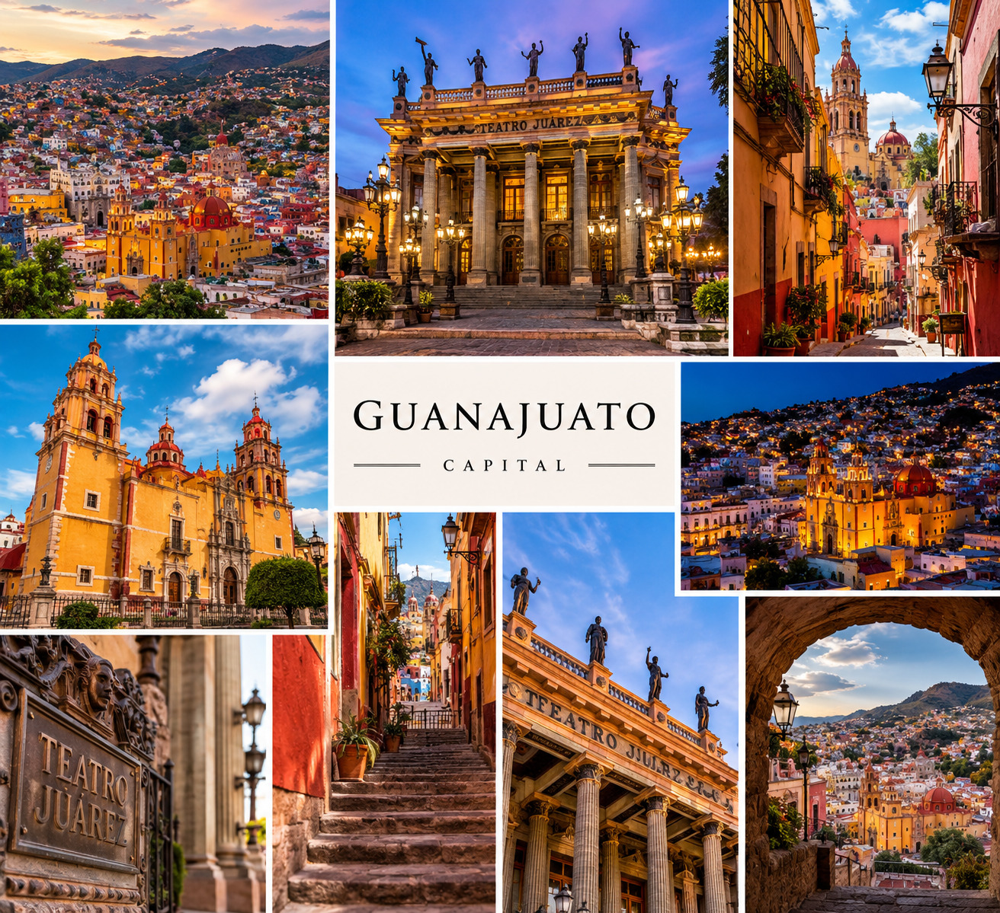
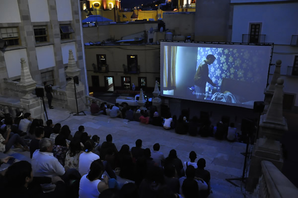
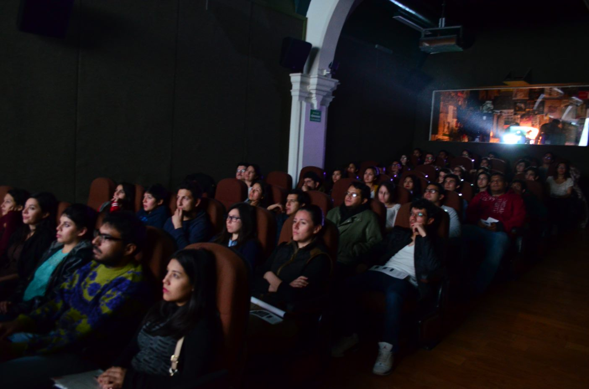
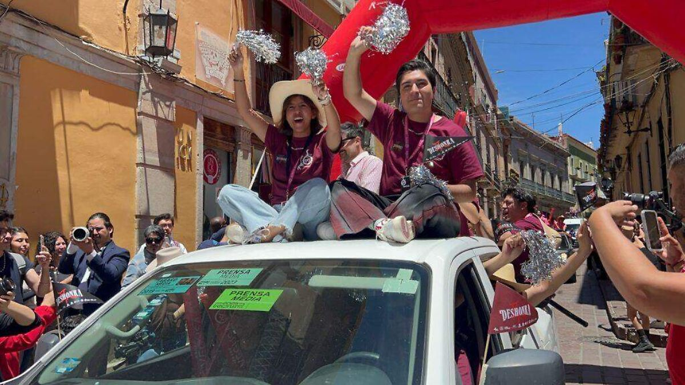
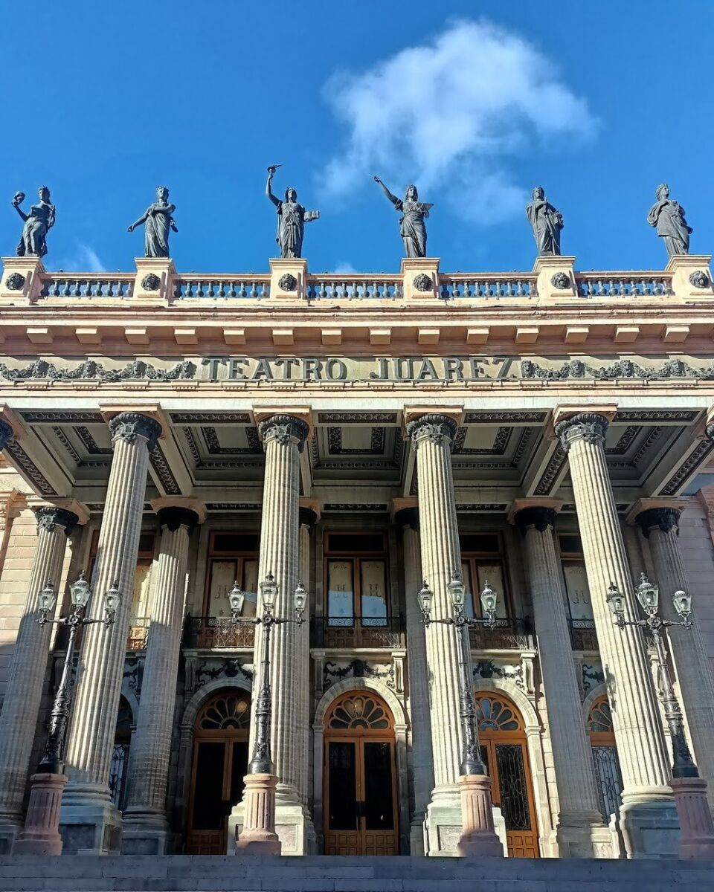
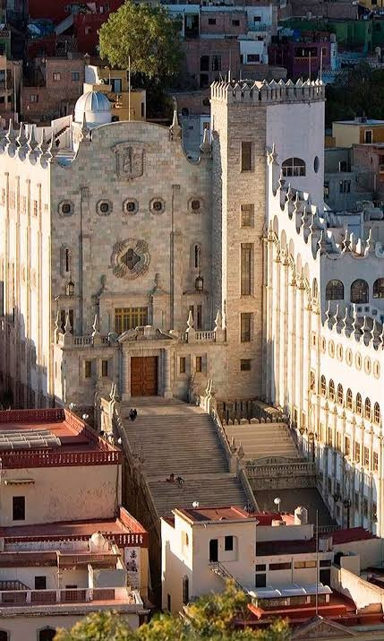

Teatro Juárez
Uno de los edificios más reconocibles de Guanajuato. Su fachada combina elementos neoclásicos y referencias a la arquitectura europea, mientras que su interior conserva una decoración teatral característica.
Treinta y tres días caminando por Guanajuato Capital: sus calles, túneles, plazas, edificios, montañas, cafés, miradores y rincones que aparecen cuando uno deja de mirar la ciudad como un simple destino turístico.
Guanajuato Capital es una ciudad construida entre montañas. Su paisaje urbano está formado por calles estrechas, callejones, plazas y edificios históricos que siguen las formas de los cerros.
La ciudad tiene una relación profunda con la minería. Durante siglos, la extracción de plata transformó la región y dejó una arquitectura que combina templos, casas antiguas, haciendas, túneles y espacios públicos.
Caminar por Guanajuato significa subir y bajar constantemente. Una calle puede terminar en un callejón, una escalera puede conducir a un mirador y un túnel puede llevar de una parte de la ciudad a otra.

Uno de los edificios más reconocibles de Guanajuato. Su fachada combina elementos neoclásicos y referencias a la arquitectura europea, mientras que su interior conserva una decoración teatral característica.
La Basílica Colegiata de Nuestra Señora de Guanajuato, conocida popularmente como Catedral de la Paz, se encuentra en el corazón histórico de la ciudad.
Los callejones forman parte esencial del paisaje de Guanajuato. Entre escaleras, fachadas coloridas y pequeñas plazas aparecen recorridos que permiten conocer la ciudad a pie.
El monumento a El Pípila se encuentra en una de las partes altas de Guanajuato y ofrece una amplia vista de los tejados, iglesias y montañas que rodean la ciudad.
Este jardín se encuentra frente al Teatro Juárez y funciona como uno de los espacios centrales para caminar, descansar y observar el movimiento cotidiano de Guanajuato.
Los túneles son una de las características urbanas más particulares de Guanajuato. Algunos antiguos cauces y caminos fueron incorporados al sistema vial de la ciudad.
Diez imágenes para recorrer Guanajuato Capital a través de sus edificios, calles, plazas y paisajes. Las fotografías están organizadas del 1 al 10.








Treinta y tres días pueden parecer mucho tiempo para una ciudad que cabe en un mapa. Pero Guanajuato no se descubre únicamente siguiendo los lugares que aparecen en las guías. También está en la caminata sin rumbo, en una conversación en una plaza, en el sonido de una campana o en una calle que uno nunca había visto.
La ciudad cambia con la hora. Por la mañana las calles pertenecen a quienes trabajan y abren sus negocios. Por la tarde las plazas se llenan y por la noche los edificios iluminados adquieren otra presencia. Entre una hora y otra, Guanajuato parece convertirse en una ciudad diferente.
Este proyecto reúne fotografías y textos de una estancia prolongada en Guanajuato Capital: una mirada personal sobre la ciudad y sobre aquello que aparece cuando se permanece el tiempo suficiente para dejar de ser solamente visitante.
Ver la galeríaPara comentarios, colaboraciones, textos, fotografías o información sobre el proyecto puedes escribir por correo electrónico.
Guanajuato Capital, México.
Escribir por Proton Mail